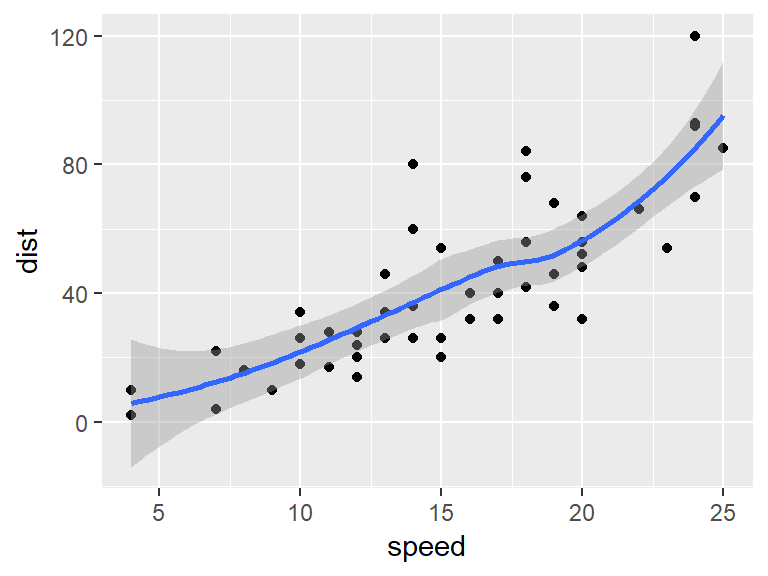

Guide here
So apparently, you can write in markdown. As well as doing a whole heap of pretty cool stuff like saying that \(\frac{3}{9} = \frac{1}{3}\), or that \(\sqrt{16} = 4\), or just typing \(\alpha, \beta, \gamma\) for lolz.
Or \(x = \frac{-b \pm \sqrt{b^2 - 4ac}}{2a}\) \[x = \frac{-b \pm \sqrt{b^2 - 4ac}}{2a}\] —
Nice.
You can also put in R code using three back-ticks, and ‘echo = FALSE’ if you don’t want the code to be printed.
## mpg cyl disp hp drat wt qsec vs am gear carb
## Mazda RX4 21.0 6 160 110 3.90 2.620 16.46 0 1 4 4
## Mazda RX4 Wag 21.0 6 160 110 3.90 2.875 17.02 0 1 4 4
## Datsun 710 22.8 4 108 93 3.85 2.320 18.61 1 1 4 1
## Hornet 4 Drive 21.4 6 258 110 3.08 3.215 19.44 1 0 3 1
## Hornet Sportabout 18.7 8 360 175 3.15 3.440 17.02 0 0 3 2
## Valiant 18.1 6 225 105 2.76 3.460 20.22 1 0 3 1But if you set echo = TRUE, it will print:
## mpg cyl disp hp drat wt qsec vs am gear carb
## Mazda RX4 21.0 6 160 110 3.90 2.620 16.46 0 1 4 4
## Mazda RX4 Wag 21.0 6 160 110 3.90 2.875 17.02 0 1 4 4
## Datsun 710 22.8 4 108 93 3.85 2.320 18.61 1 1 4 1
## Hornet 4 Drive 21.4 6 258 110 3.08 3.215 19.44 1 0 3 1
## Hornet Sportabout 18.7 8 360 175 3.15 3.440 17.02 0 0 3 2
## Valiant 18.1 6 225 105 2.76 3.460 20.22 1 0 3 1Here are some lists: * blah * blah * blah + blah (plus for indented parts) * 1 underscore or asterisk for italic * 2 " " " for bold * Superscript uses the hat, ^as per usual^ * Strikethrough uses the tilde
Numeric lists: 1. Hi 2. Hi again + Hi again + And again? + And again?
I will cite myself [^1].
For when you want programmatic inputs. Wrap the inline code in a single back-tick. I have 5+10 sheep.
I’ll have to have some in this directory (but i should add their formats to the gitignore as they’re large) if I want to upload.
More verbatim code. Not necessarily in R.
print("Hello world")A linked phrase. Alternatively, A linked phrase
library(ggplot2)
summary(cars)## speed dist
## Min. : 4.0 Min. : 2.00
## 1st Qu.:12.0 1st Qu.: 26.00
## Median :15.0 Median : 36.00
## Mean :15.4 Mean : 42.98
## 3rd Qu.:19.0 3rd Qu.: 56.00
## Max. :25.0 Max. :120.00qplot(speed,dist,data=cars) + geom_smooth()
[^1] Me.